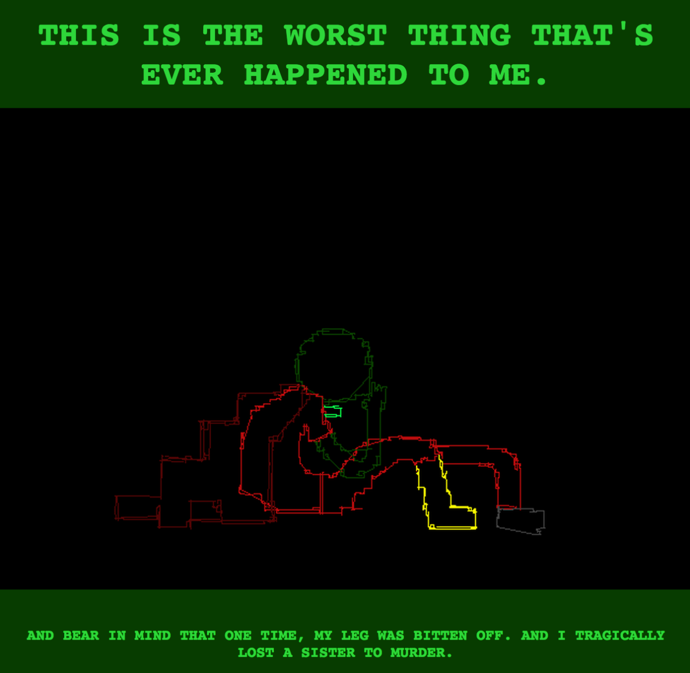

Oh my god, Caliborn. Really? REALLY?!
I kind of really love how aware he is of his audience. This is all for us. I guess he’s just hoping that we won’t remember that he was ever so happy to have his own sister murdered. I mean, that probably was the worst thing that “happened to him,” because he pretty much doomed himself to permanently stunted immaturity, but I’m pretty sure he would never agree. Which is, in fact, tragic!